Префектура Сайтама · Токигава · крафтовое пиво
Teenage Brewing: музыкант варит крафтовое пиво в деревенской Токигаве
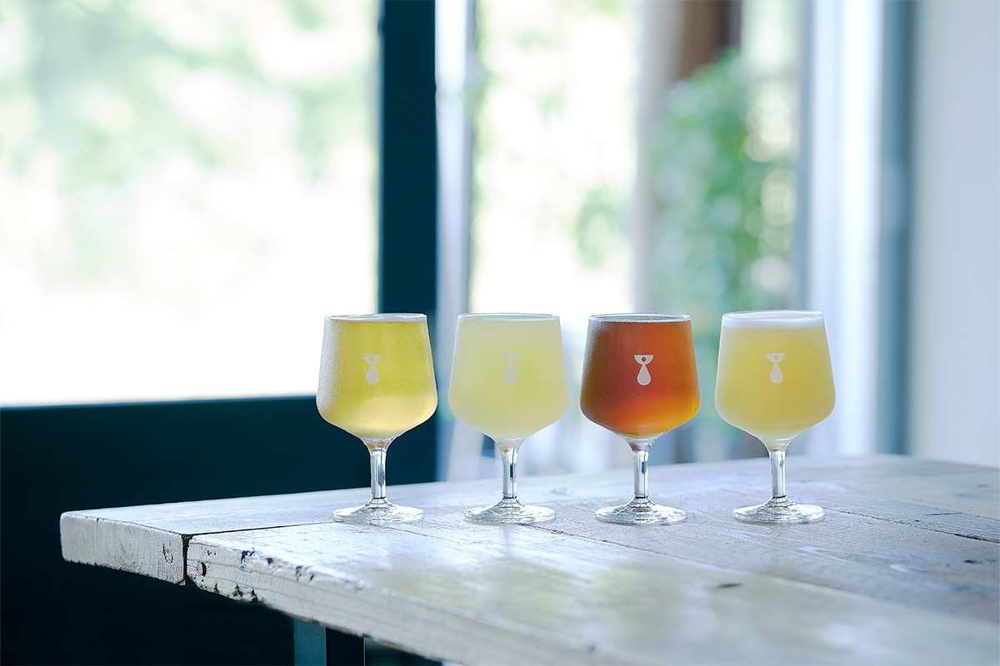
Пивоварню Teenage Brewing в маленьком городке Токигава основал музыкант, и варит он пиво так же, как пишет песни. Каждый рецепт здесь звучит один раз, а новые сорта раскупают за несколько минут.
Пивовар
Музыкант, который стал пивоваром
За окном холмы, поросшие лесом, и по ним проходит маленький местный поезд. Первый глоток золотистого пива бьёт густой хмелевой горечью, а следом во рту раскрываются тропические фрукты. В 2024 году Teenage Brewing считали одной из самых обсуждаемых пивоварен японской крафтовой сцены, и пиво у неё вызывает то же волнение, что первая пластинка никому не известной панк-группы, когда на неё опускаешь иглу.
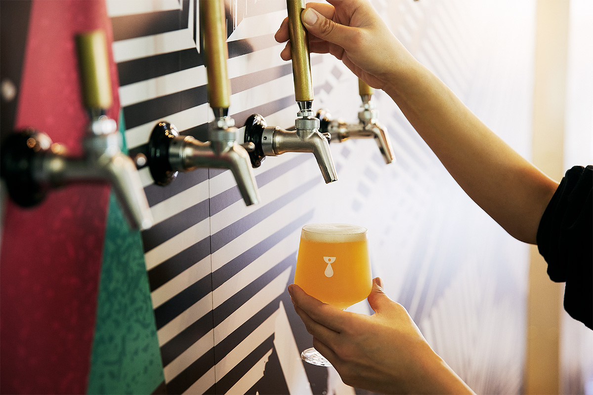
Пивовар Дайти Мори прежде всего музыкант. Он играет в альтернативной группе Aureole, ведёт собственный лейбл kilk records, а в городе Сайтама и других местах держит концертные клубы и бары. Музыкой он занимается тридцать лет, с ранней юности, и в своих заведениях давно наливал хорошее крафтовое пиво.
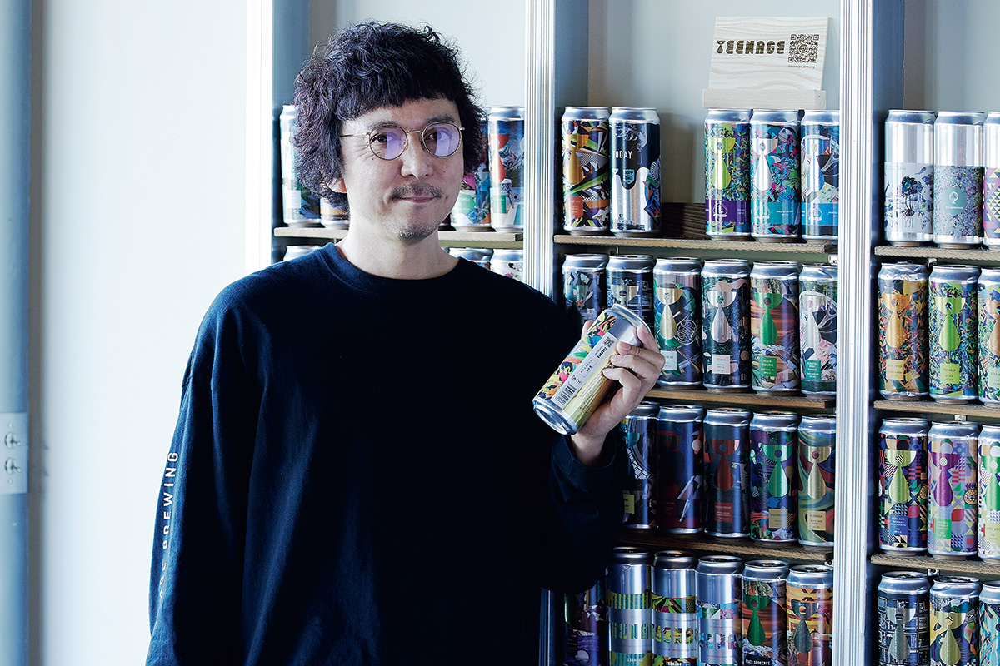
«Всё началось больше десяти лет назад, когда я выпил Punk IPA от BrewDog. Меня поразило, что пиво, вместе с его дизайном, может быть таким свободным»
Дайти Мори
Пластинку выбираешь по обложке, удивляешься незнакомому звуку и тут же хочешь поделиться с друзьями. С пивом, понял Мори, происходит то же самое: и в музыке, и в пиве есть азарт, который заводит людей. Во время пандемии он задумался о том, как живёт, и решил стать пивоваром. Он учился на пивоварне BEER BRAIN BREWERY, которую давно уважал, и одновременно читал книги о пивоварении, ароматах, химии и кулинарии. В июне 2023 года вышла первая партия под названием Teenager.
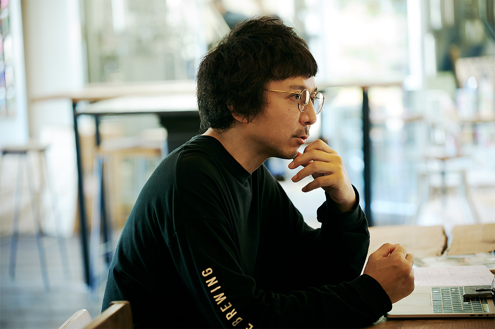
Рецепты
Пиво, которое не повторяется
Рецепты Мори придумывает вместе с главной пивоваркой. Иногда он собирает пиво как песню: дрожжи у него барабаны, солод бас, а хмель гитара и вокал.
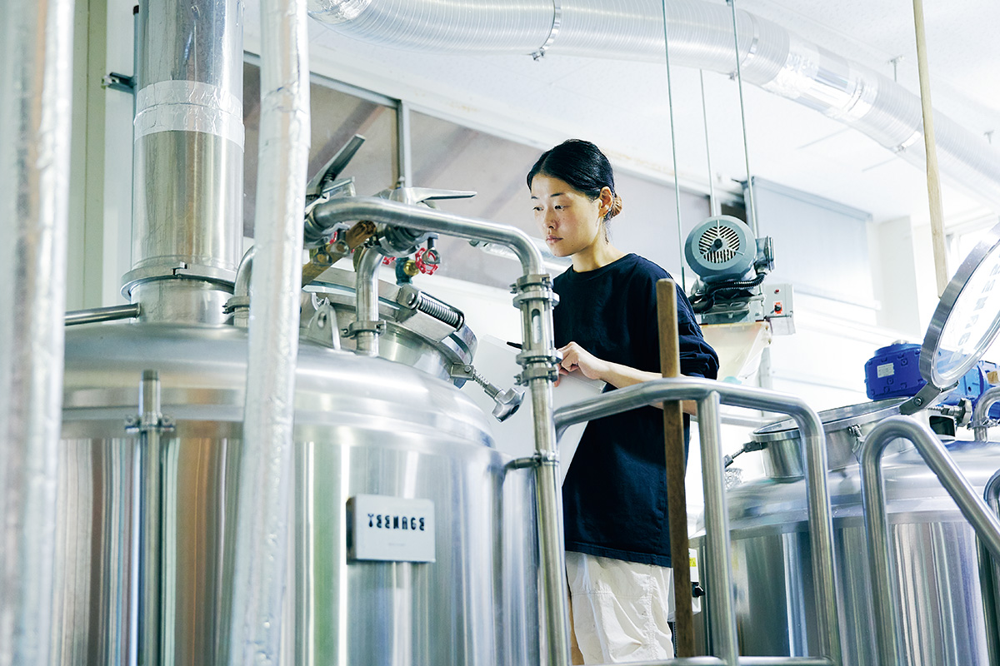
«Когда я пишу музыку, смысл моего существования в оригинальности. С пивом то же самое»
Дайти Мори
В юности Мори, едва научившись брать на гитаре аккорд фа, не выпускал её из рук целыми днями. С тем же первым порывом и свободой он варит пиво. В основном это ароматные Hazy IPA и кислые эли, и каждое оставляет сильное впечатление.
Одним чутьём дело не ограничивается. Пивоварня тщательно продумывает, сколько и какого хмеля класть, когда его добавлять и при какой температуре держать сусло, а аромат строит по приёмам миксологии, как бармен строит коктейль. К осени 2024 года партий вышло больше ста, и ни один рецепт не повторяли дважды. На пивных и музыкальных фестивалях к стойке Teenage Brewing выстраиваются очереди, а новые сорта раскупают за несколько минут.
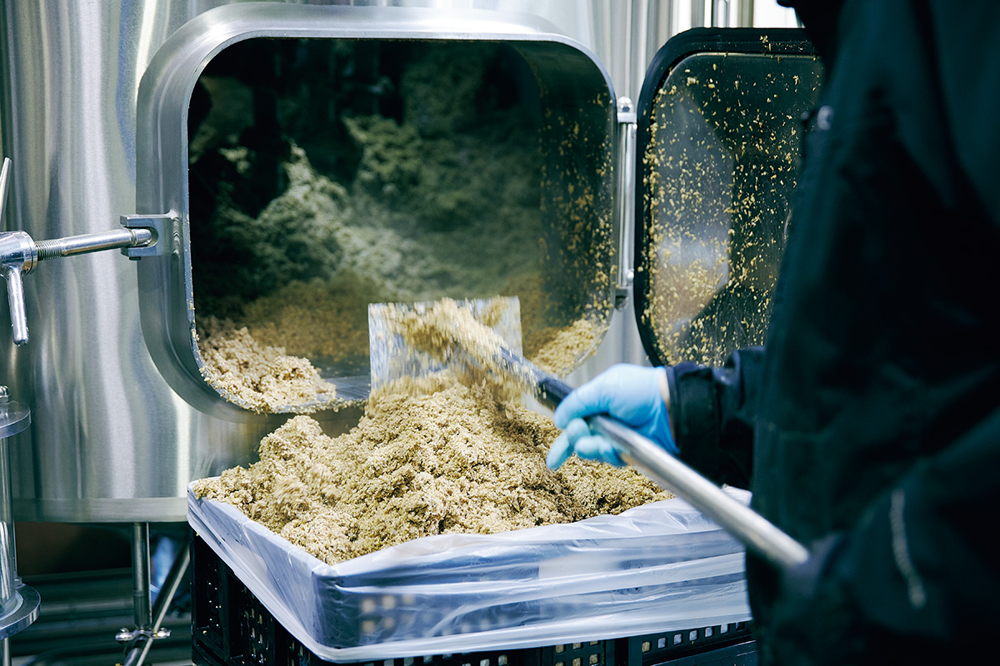
«Мы следим за тем, что происходит в мире, всё время пробуем новые вкусы и хотим стать лучшей пивоварней в мире»
Дайти Мори
Тапрум
Бывшая столярная мастерская в Токигаве
Пивоварня и тапрум стоят в городке Токигава, среди зелени, примерно в двух часах от центра Токио. Под них перестроили бывшую столярную мастерскую: просторный зал площадью около 330 квадратных метров. Здесь наливают около десяти сортов крафтового пива и подают еду, а за работой пивоварни можно наблюдать прямо из зала.
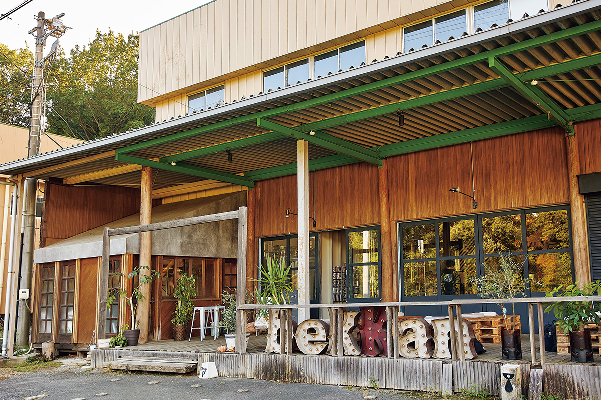
Teenage Brewing, тапрум «bekkan»
- Адрес
- префектура Сайтама, уезд Хики, Токигава, Баба, 435-1
- Телефон
- +81 493-81-5308
- Часы работы
- вторник–пятница 11:00–16:30 (последний заказ в 16:00), суббота, воскресенье и праздники 11:00–20:00 (последний заказ в 19:30)
- Выходные
- понедельник
- Сайт
- teenage.jp
Этикетки
Пиво, которое выбирают по обложке
Хмеля и солода Teenage Brewing не жалеет, а к ним добавляет самые разные фрукты и неожиданные вещи: японский кипарис хиноки, дзунду (сладкую пасту из молодых соевых бобов), бульон из водорослей комбу. Этикетки под стать вкусу. В их основе авангардные рисунки художника, и банку хочется взять, как пластинку, купленную за обложку.
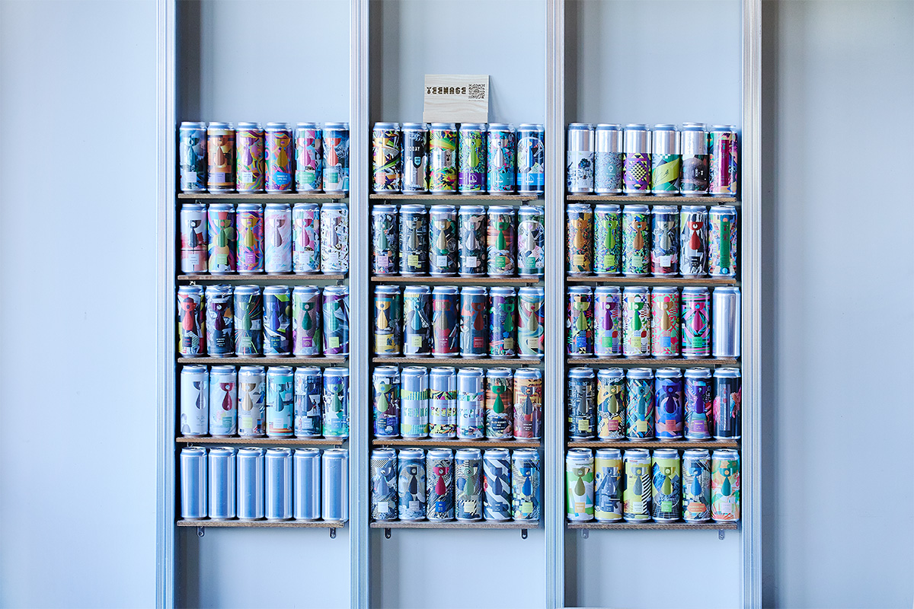
«Ни в дизайне, ни во вкусе мы не стараемся понравиться всем. Не хочу, чтобы про наше пиво говорили „ну, нормально“. Пусть оно цепляет тех, кого цепляет, но цепляет глубоко»
Дайти Мори
Несколько сортов осени 2024 года показывают, как широко работает пивоварня. Все они выходили одной партией и продавались до конца запаса. Interplay, западнобережный IPA крепостью 7%, пахнет маракуйей и белым виноградом, цена на момент рассказа ещё не была объявлена. Entropy, DDH IPA крепостью 6,5% с овсом и лактозой, сочетает тропические ноты дыни и манго с цитрусом и пьётся легко: 1450 иен за банку 500 мл в 2024 году.
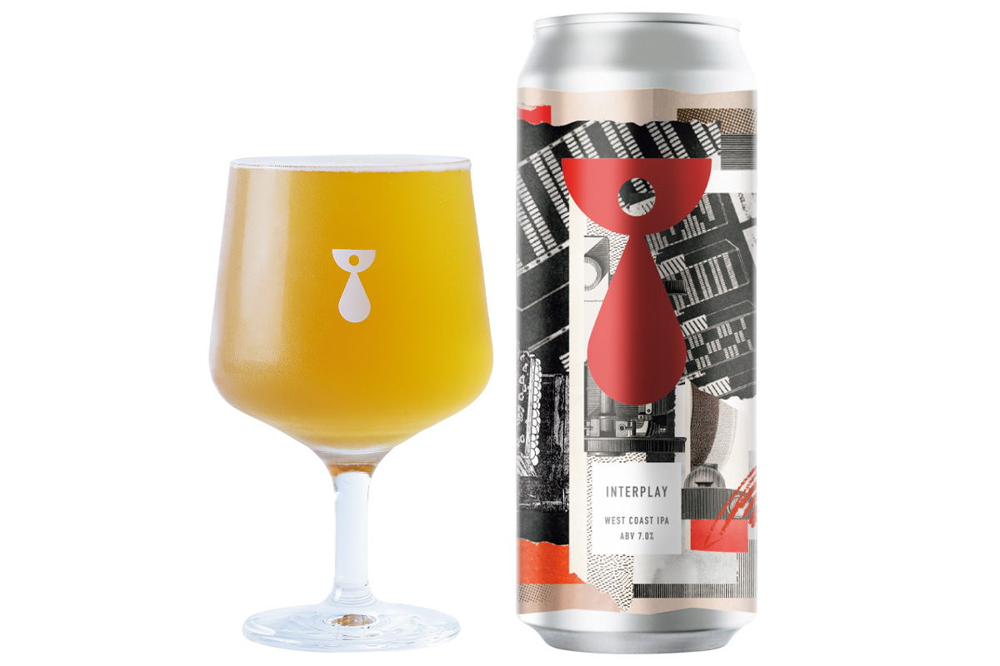
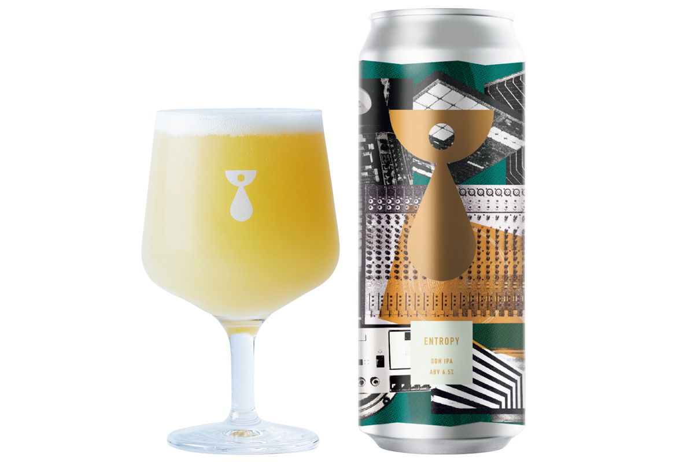
Undercurrent, имперский красный эль крепостью 8%, сварен с черешней из префектуры Ямагата: к сладкому густому солодовому аромату добавляются ноты сухофруктов, 1340 иен. blueSky, сессионный IPA крепостью 4%, с яркими цитрусовыми нотами хмеля и лёгким телом, подходит к самой разной еде, 1350 иен (цены 2024 года, банка 500 мл).
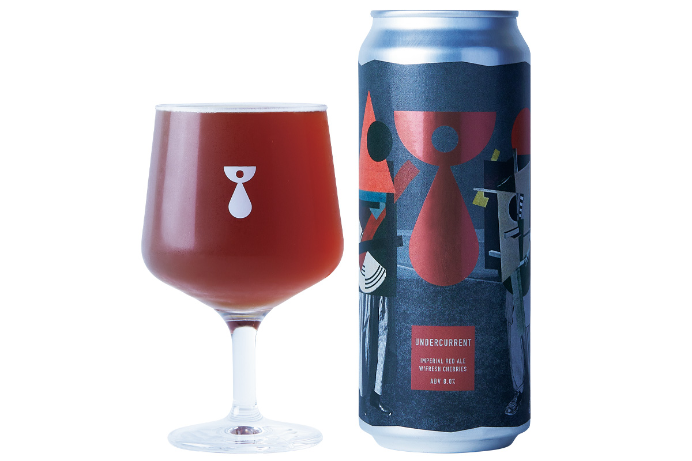
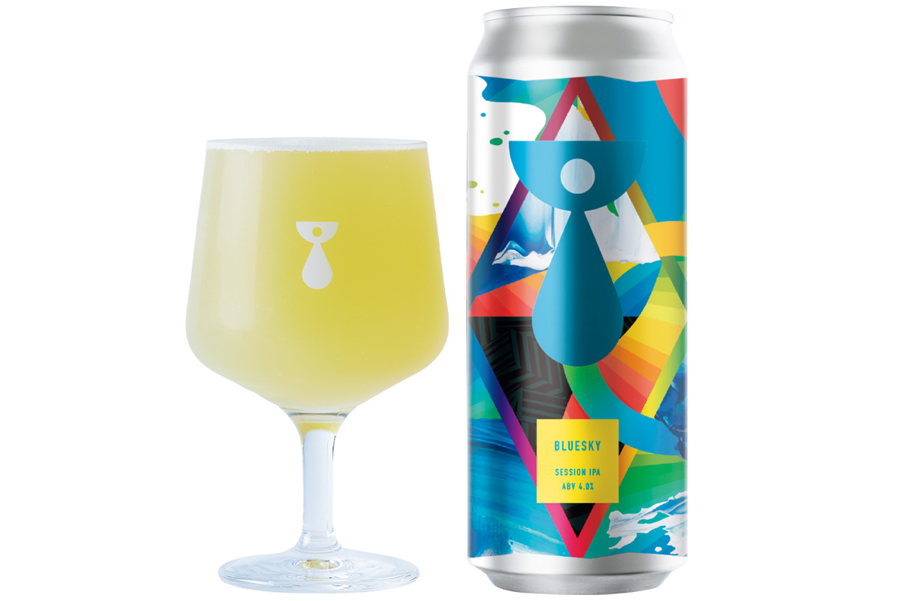
Фото: Сихо Акияма.